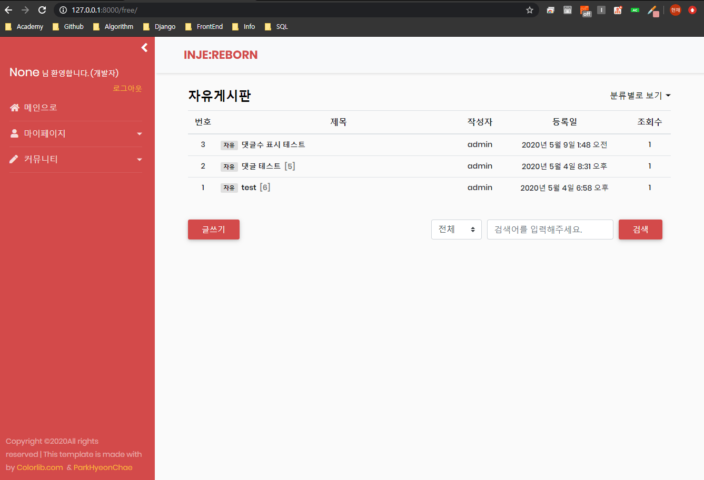

2020-05-04
Django 27. 댓글접기 / 펼치기, 댓글수 표시 구현
게시글 리스트와 상세보기 페이지에 댓글의 개수를 표시하고, 댓글 접기와 펼치기를 구현합니다.
1. 댓글 수 models.py 추가 사용자가 댓글을 작성, 삭제할때마다 Foreign Key 관계로 연결된 게시글의 댓글 수를 표시하기 위해 기존 모델에 comments 의 필드명을 가진 모델을 추가로 정의합니다.
1 2 3 4 # free/models.py class Free(models.Model): comments = models.PositiveIntegerField(verbose_name='댓글수', null=True)
댓글수 필드인 comments 필드는 정수만 취급하도록 하기 위해 PositiveIntegerField 로 명시해줍니다. 그후 DB에 적용하기 위해 아래의 명령어로 migrate를 진행합니다.
1 2 $ python manage.py makemigrations free $ python manage.py migrate
2. views.py 수정 게시글에 접근했을때 현재 게시글의 댓글 수를 표시하기 위해 views.py 의 detail_view 에 아래와 같이 댓글 수를 context로 넘겨주는 소스를 추가합니다.
1 2 3 4 5 6 7 8 9 10 # free/views.py def free_detail_view(request, pk): comment = Comment.objects.filter(post=pk).order_by('created') comment_count = comment.exclude(deleted=True).count() context = { 'comments': comment, 'comment_count': comment_count, }
pk인자로 가져온 post에 Foreign Key로 연결된 댓글들의 쿼리셋인 comment의 갯수를 저장하는 comment_count 를 추가합니다. exclude 메소드로 삭제여부를 확인하는 필드인 deleted가 True인 댓글들은 제외하고 count() 메소드로 반환된 쿼리셋의 갯수를 comment_count 에 저장합니다.
또한 댓글이 추가, 삭제될 때마다 댓글 수를 저장하는 comments필드를 업데이트 시켜주기 위해 comment_write_view 와 comment_delete_view 에 아래와 같이 소스를 수정해줍니다.
1 2 3 4 5 6 7 8 9 10 11 12 13 14 15 16 17 18 19 20 21 22 23 24 25 26 27 28 29 30 31 32 33 34 35 36 37 38 39 40 41 # free/views.py def comment_write_view(request, pk): post = get_object_or_404(Free, id=pk) writer = request.POST.get('writer') content = request.POST.get('content') if content: comment = Comment.objects.create(post=post, content=content, writer=request.user) comment_count = Comment.objects.filter(post=pk).exclude(deleted=True).count() post.comments = comment_count post.save() data = { 'writer': writer, 'content': content, 'created': '방금 전', 'comment_count': comment_count, 'comment_id': comment.id } if request.user == post.writer: data['self_comment'] = '(글쓴이)' return HttpResponse(json.dumps(data, cls=DjangoJSONEncoder), content_type = "application/json") def comment_delete_view(request, pk): post = get_object_or_404(Free, id=pk) comment_id = request.POST.get('comment_id') target_comment = Comment.objects.get(pk = comment_id) if request.user == target_comment.writer or request.user.level == '1' or request.user.level == '0': target_comment.deleted = True target_comment.save() comment_count = Comment.objects.filter(post=pk).exclude(deleted=True).count() post.comments = comment_count post.save() data = { 'comment_id': comment_id, 'comment_count': comment_count, } return HttpResponse(json.dumps(data, cls=DjangoJSONEncoder), content_type = "application/json")
comment_count 에 삭제되지 않고 현존하는 댓글의 갯수를 저장하고, 현재 게시글의 댓글 수 필드인 post.comments 에 댓글의 갯수를 저장하고 있는 comment_count 로 save합니다.
3. 댓글수 표시 templates 추가 게시글 리스트의 각 제목 옆에 게시글마다 댓글이 있을 경우 그 댓글 수를 표시하기 위해 아래와 같이 free_list.html 에 댓글 갯수 필드인 free.comments 를 얻는 소스를 추가합니다.
1 2 3 4 5 6 7 8 9 10 11 12 13 <!-- templates/free/free_list.html --> <tr class="text-center" style="cursor:pointer;" onclick="location.href='/free/{{ free.id }}/'"> <td>{{ free.id }}</td> <td>{{ free.title|truncatechars:30 }} {% if free.comments %} <span>[{{ free.comments }}]</span> {% endif %} </td> <td>{{ free.writer }}</td> <td>{{ free.registered_date|date:'Y. m. d' }}</td> <td>{{ free.hits }}</td> </tr>
4. 댓글접기 / 펼치기 templates 추가 특정 게시글에 접근했을 때 view에서 context로 넘겨받은 댓글의 개수를 표시하고 댓글의 갯수가 많을 경우 사용자가 댓글 접기, 펼치기를 할 수 있도록 구현하기 위해 free_detail.html 에 스크립트를 아래와 같이 추가합니다.
1 2 3 4 5 6 7 8 9 <!-- templates/free/free_detail.html --> {% if comments %} <div id="hide_more_button"><a id=hide_button_count> 댓글 접기 · {{ comment_count }}개의 댓글<br></a></div> <div id="show_more_button" style="display:none;"><a id=show_button_count> 댓글 펼치기 · {{ comment_count }}개의 댓글<br></a></div> {% else %} <div id="hide_more_button"><a id=hide_button_count><br></a></div> <div id="show_more_button" style="display:none;"><a id=show_button_count><br></a></div> {% endif %}
위 소스는 댓글작성 textarea와 댓글목록을 표시하는 소스 사이에 추가합니다. 템플릿 언어로 comments가 있을 경우 댓글 수를 표시합니다. 댓글접기와 댓글펼치기를 구현하기 위해 javascript 에서 매핑할수 있는 id값을 부여하고 a태그로 댓글 접기와 댓글 펼치기를 추가합니다.
1 2 3 4 5 6 7 8 9 10 11 12 13 14 <!-- templates/free/free_detail.html --> <script type="text/javascript"> $('#hide_more_button').click(function(){ $('#more_comment').hide(); $('#show_more_button').show(); $('#hide_more_button').hide(); }); $('#show_more_button').click(function(){ $('#more_comment').show(); $('#show_more_button').hide(); $('#hide_more_button').show(); }); </script>
javascript 의 hide() 와 show() 메소드는 html style의 display를 감추거나 표시할때 사용하므로 위와 같이 소스를 작성하여 댓글펼치기와 접기를 구현합니다.
4. 결과 
*전체 html, css 등은 자세하게 포스팅하지 않습니다. 제 Github 에서 소스를 확인하실 수 있습니다.